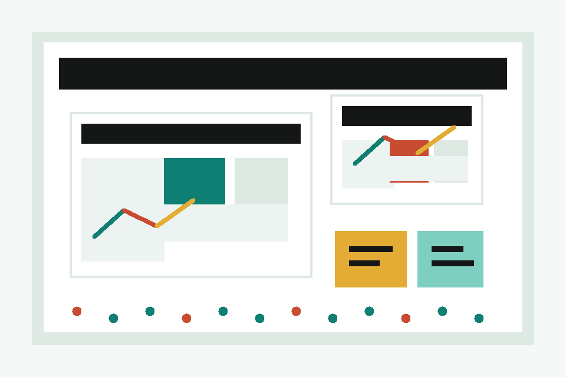

Student AI literacy through structured use
Build judgment, not dependency.
Learners begin with their own thinking, interrogate AI output, compare alternatives, and leave with a clearer final judgment.

Activity studio
A structured AI response audit
Use the panels in order. The goal is not to make AI disappear; the goal is to make your judgment visible.
Choose or write a question
Pick a class-ready question, then adjust it until it sounds like something you would genuinely answer.
Start with your own answer
Capture your first claim, your support, and the place where your confidence thins out.
Build the AI request
The prompt asks AI to support your thinking process, not to replace it.
Paste, label, and question the AI response
Use the labels to name what the response does well, where it weakens, and what still needs checking.
Score the usefulness of what AI produced
Ratings are not about liking the answer. They are about deciding what deserves trust, revision, or rejection.
Write the improved answer
Keep at least one idea from your original response, then explain what you accepted, changed, or rejected from AI.
AI Use Note
This summary makes the learner's process visible for a teacher, peer reviewer, or future self.